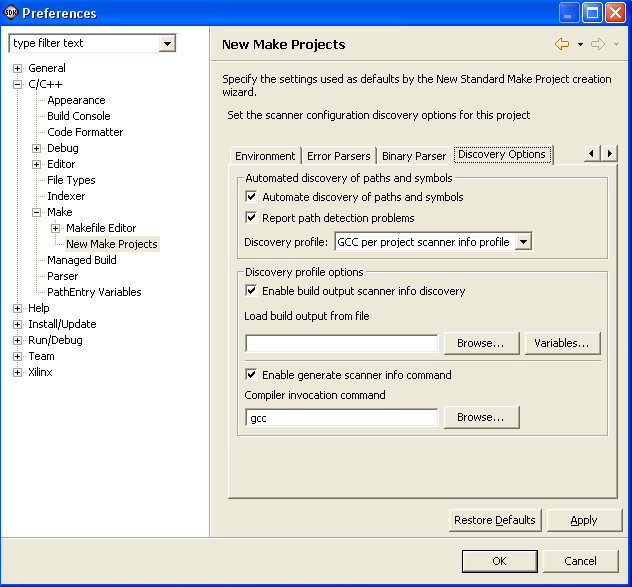

Discovery Options page, C/C++ Preferences window
You can define the discovery options on the Discovery Options page of a C/C++ Preferences window.

- Automate discovery of paths and symbols
- Select this checkbox to scan the build output for
paths and symbols.
- Enable build output scanner info discovery
- This section allows you to select the make build
output parser.
- Enable generate scanner info command
- Select to invoke secondary paths and symbols provider
(such as GNU specs).
- Restore Defaults
- Returns any changes back to their default setting.
- Apply
- Applies any changes.